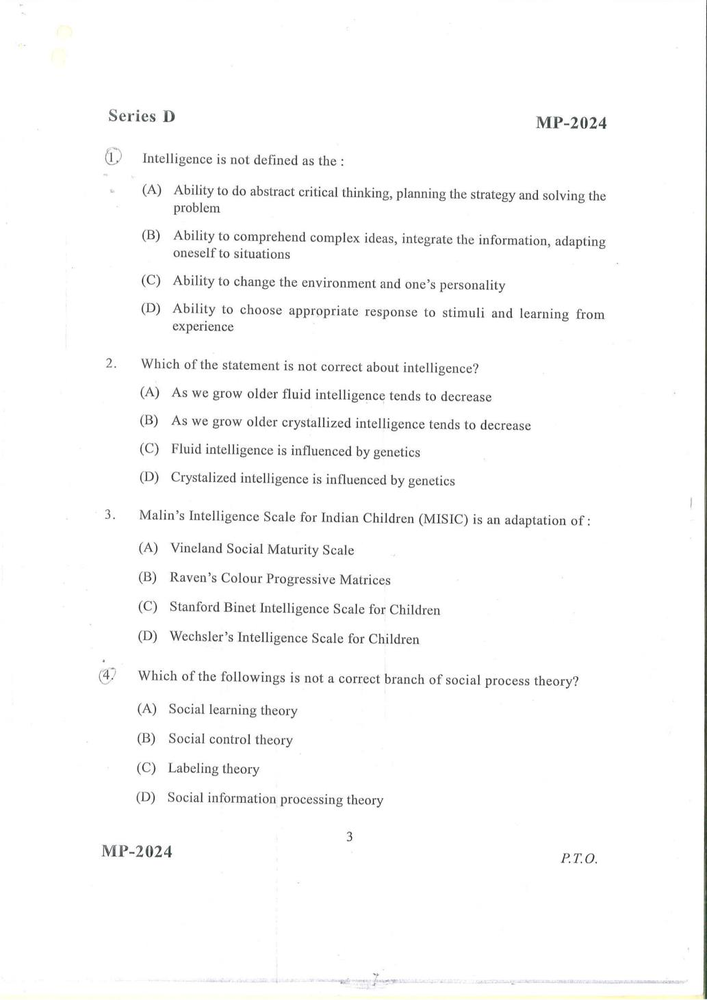
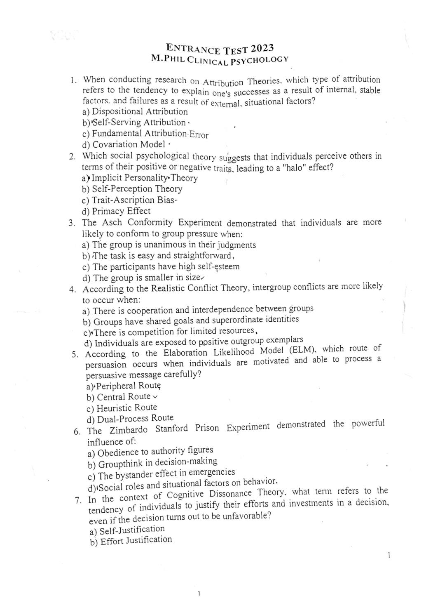
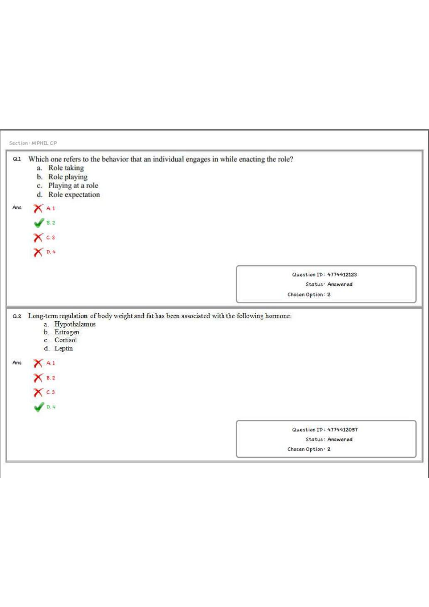

Every past paper that exists anywhere in your material. College, year, where it came from (you, the Mimaansa Drive, or buried inside a file you sent), how many pages, whether there's an answer key, and whether it's built into a mock yet. Pulled out of the WhatsApp log and the Drive folder, then every file actually opened and read, not taken from the filename. Third pass, 26 July 2026: every camera-scanned PDF opened and read page by page off the image, because a scan has no text layer and the filename is the only thing a search can see. Six papers turned out to have an answer key I said they didn't have, one I'd called built isn't, and three papers don't print the college anywhere.
Third pass: the camera scans. Everything up to now leaned on the text layer inside a PDF. 21 of your files don't have one – they're photographs of paper, so nothing but the filename was ever readable. I opened all of them and read the pages off the image. That's where the misses were.
1. "IHBAS 2024 april.pdf" is not part of the 2024 mock, and it has an official key. I had it down as the same exam as the 112-page booklet, folded in. It isn't. Its questions are nowhere in that booklet – I checked every one. It's a separate 100-question sitting, header reads MP–2024, Series D, and its last page is the signed final answer key for all 100, with the rule for converting between series written under it: Series A as it is; B – Q26 becomes Q1; C – Q56 becomes Q1; D – Q76 becomes Q1. So this is a keyed, exact build that was never actually built. Build queue #39, and it's my top pick now.
2. RML 2025 has the university's own answer key sitting in it. 18 pages: page 1 is the GGSIPU Controller of Examinations notice inviting objections to the CET held 09/11/2025, pages 2–17 are the full 100-question M.Phil Clinical Psychology 2025 booklet (4 marks a question, no negative marking, 120 minutes), and page 18 is the official key, all 100 answers in a table. The live mock was built off answers I worked out myself. Say the word and I'll diff it against the real key.
3. RML 2022 is a GGSIPU exam-portal sheet with the correct answers marked. Test date 23/06/2022, centre Titiksha Public School, sectioned by subject. Every question shows a green tick against the right option, separately from the candidate's chosen option. Same for the live 2022 mock – it can be locked to this.
4. I was wrong about NFSU 2020. I'd written it off as "a candidate's response sheet, chosen options only, not a key". It's the same portal format as RML 2022: the correct option is green-ticked on all 100 questions. It's a fully keyed paper. What it isn't is identifiable – see below.
5. JEPAS(PG) 2020 is solved. Cover page confirms it: JEPAS(PG)–2020, M.Phil in Clinical Psychology, 90 minutes, 100 marks, quarter-mark negative, Set A. All 100 answers are highlighted in yellow through the copy. Keyed build.
6. Smaller corrections off the images. IMHANS 2025 is 75 questions, not 100 (booklet 25035–A, 60 minutes), and the pencil ticks do run the whole way through. KU 2023 is 70 questions, ticked throughout. RINPAS 2019 is a full 100, booklet B, code IR–1B/19, 2½ hours, no negative marking. NFSU 2024 is nine photos of the Panwar book – the answer explanations are in the shot, so it's keyed, but page 1 is cropped down the left column and page 9 is upside down, so it needs re-shooting or careful reading. JEMAS 2022 is the same paper as the one in the compiled file, except this copy has all 100 answers circled in pen – the scan is the keyed copy.
7. Two more files are not papers, confirmed by opening them. "NIMHANS 2023.pdf" (4 pages) is a typed recall list – "Risk ratio 1 meaning", "MHA 2017, treatment of minors" – no options, no key. It is not the memory-based NIMHANS paper in the pack; different thing, same year. And "CIP 2023" is a recall list too, re-confirmed.
8. Not papers, but worth having: the three long unnamed PDFs you sent (dated 05 Feb, 25 May and 03 Jul 2026) are the RCI List of Approved Institutions, 113 / 123 / 123 pages, with programme, duration, approval extension and seat intake per institute. "College list.pdf" is the RCI Centres of Excellence table with institute codes and state. That's the source I need for the RCI tracker with the fee/seats cells – it was sitting in the scans the whole time.
Each of these is a real, buildable exam. None of them names an institute anywhere in the file, so I'm not going to guess a name and put it on the site. Here's the page – you tell me and I build it under the right one.



What the second pass turned up, earlier today. You said include every single one, so I went back through the WhatsApp log and the Mimaansa Drive and opened everything again, including the files I'd previously written off as "compilations". 13 more real papers came out, and 5 papers I'd marked as having no key actually have one.
1. "2010-2024 Q papers.pdf" is not a compilation, it's ten separate exams. It's the University of Jammu (School of Education & Behavioural Sciences) M.A. Psychology entrance, 60 questions and 70 minutes each, one paper per year: 2010, 2011, 2012, 2013, 2014, 2015, 2017, 2020, 2021, 2023. The 2023 and 2021 ones have a clean text layer and build fast; the rest are scans. This was sitting in the "not exam papers" pile. It shouldn't have been.
2. "Mphil past papers Compiled.pdf" is 478 pages and it hides three things. Most of it is copies of papers I already had (GMCH 2023, the four IHBAS 2024 booklets twice over, JEMAS 2022 and 2023, the RINPAS booklet). But buried in it: a second NFSU 2023 slot (Slot 1, different questions from the Slot 3 dump), and a 70-question M.Phil Clinical Psychology 2021 paper whose cover page never names the college. That one is clean text and easy to build – I just need you to tell me whose exam it is.
3. There is a paper in the Drive you never sent me. LGBRIMH Tezpur 2025 (GURET), 9 pages, about 62 memory-based questions with answers written in. It's in there twice under two names; both files are identical. Only Drive-sourced paper in the whole list.
4. The 76-page pack is better than I said it was. I'd described it as a mixed bag with topic banks in the middle. It isn't. It's six Amit Panwar "Previous Year Mock Test Series" reproductions back to back, and every single one prints full answers with explanations: RML 2024 (pp1–15), RINPAS 2024 (pp16–30), RINPAS 2019 (pp31–42), CIP 2020 (pp43–54), GMCH 2023 (pp55–68), NIMHANS 2023 memory-based (pp69–76). I had cut four of those blocks short and called the leftover pages "topic banks", which is why I'd marked RML 2024, RINPAS 2024, RINPAS 2019 and GMCH 2023 as having no key. They all have one.
5. RINPAS 2024 was double-counted. The undated "RINPAS Booklet" and the "4-page partial in the pack" are the same exam – booklet code HD–2A/7, 2 hours, 200 marks. One paper, now one row, and it's keyed.
Still on the page on purpose: the mislabelled UGC NET file, marked NOT A PAPER, so it stays visible instead of quietly disappearing.
Ordered by how cleanly they can be built, not by year. No number has ever been renumbered – 21 still means what 21 meant this morning, so you can just reply with a number. What moved on the scan pass is which group five of them sit in: 20, 21, 22, 23 and 25 all turned out to carry answers, so they came up out of the awkward-scans pile into the keyed pile. 39 is new, and it goes straight to the top: it's a fully keyed 100-question paper I had wrongly recorded as already built.
Six things I got wrong before, corrected after opening the files:
1. "IHBAS PY.pdf" (25 Apr) and "IHBAS Entrance Exam Psychology Previous Question Paper (1).pdf" (8 Jun) are not IHBAS papers. They are the same file sent twice, byte for byte identical, 16 pages, 50 questions, and it's a UGC NET psychology paper. Marked on this page permanently so neither of us mistakes it for an IHBAS paper again.
2. "CIP 2023.pdf" is not a question paper. It's a 7-page recall list titled "Topics from where the questions in CIP 2023 Entrance Exam were asked", with the answer written into a lot of the lines. Useful, but there's no paper there to reproduce. CIP 2023 can only become a topic-driven set, not a real mock.
3. "GMCC 2023" is not a separate college. Opened it: it's the official Government Medical College Chandigarh M.Phil booklet from the entrance test held 02.09.2023, 100 questions, all 10 pages. So GMCH Chandigarh 2023 is fully in hand, not the 3-page fragment I said it was.
4. Gurugram 2025 is two papers, not one file sent twice. One is the university's own notice PDF with the M.Phil paper (60 Qs) and the M.A. paper (70 Qs) and the official answer key for both. The other is a solved version of the same exam by Anukriti. Two keyed papers, not a duplicate.
5. IHBAS 2025 does have an official key and I'd written that it didn't. "M.Phil IHBAS answerkey.pdf" (25 Apr) is a 4-page key with Sets A, B, C and D. Ran all 100 answers in the live IHBAS 2025 mock against it today: 98 match Set A (Sets B, C and D are the same key rotated, so they score 18–26 – Set A is definitely the right one for this paper). Two disagree: Q77 and Q86. The official key says C for both; the mock currently says D and A. The key is authoritative, so those two answers are wrong on the site and I'll fix them and their explanations next.
6. Amity 2023, IHBAS 2020 and RML 2020–2025 came from you, on 25 April. I'd said they came off the Mimaansa Drive. They sit in both places; the papers are yours.
Books, question banks, syllabi and admin files. Opened and checked, and none of these has a paper hiding in it – the two that did ("2010-2024 Q papers" and "Mphil past papers Compiled") have been promoted into the library above. This page stays a pure PYQ list unless you tell me to fold them in properly.
{kind=link}
{kind=link}
{kind=link}
{kind=link}